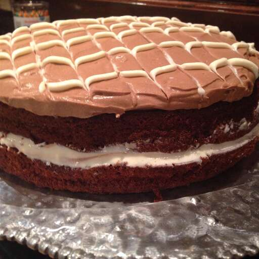

Chocolate Mousse Cake

Description
Enjoy this easy chocolate mousse cake recipe. Everyone will think you bought it at a bakery!
Ingredients
- 1 (18.25 ounce) package chocolate cake mix
- 1 (14 ounce) can sweetened condensed milk
- 2 (1 ounce) squares unsweetened chocolate, melted
- ½ cup cold water
- 1 (3.9 ounce) package instant chocolate pudding mix
- 1 cup heavy cream, whipped
Steps
-
Preheat the oven to 350 degrees F (175 degrees C). Prepare and bake cake mix according to package directions for
two 9-inch layers. Cool and remove from pans.
-
In a large bowl, mix together sweetened condensed milk and melted chocolate. Gradually stir in water, then instant
pudding until smooth. Chill for at least 30 minutes.
-
Remove chocolate mixture from the refrigerator and stir to loosen. Fold in whipped cream and return to the
refrigerator for at least another hour.
-
Place one layer of cake onto a serving plate. Top with 1 1/2 cups of mousse, then cover with remaining cake layer.
Frost with remaining mousse, and refrigerate until serving. Garnish with fresh fruit or chocolate shavings.
Back to Home